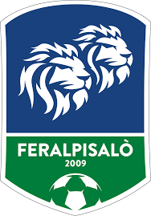

Feralpi Salò

La Feralpisalò è una società calcistica italiana, fondata nel 2009, che rappresenta le città di Salò (dove ha sede) e Lonato del Garda, entrambe in provincia di Brescia. Milita in Serie C, la terza divisione del campionato italiano.
La squadra nasce a seguito della fusione tra due club preesistenti: l'A.C. Salò Valsabbia (nata nel 1985 con il nome di A.C. Salò Benaco) e l'A.C. Feralpi Lonato di Lonato del Garda (nata nel 1963 con il nome di Pejo Lonato). Quest'ultima fu rinominata dieci anni dopo a seguito dell'acquisizione da parte del gruppo Feralpi (attivo nel settore siderurgico), che ha poi supervisionato l'unione tra i due club e ne ha finanziato la progressiva crescita.